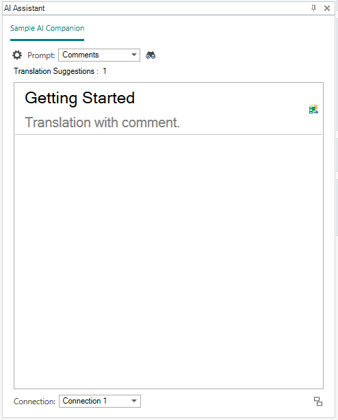

How to implement AI Companion
The AI Companion API facilitates LLM integration in Trados Studio for translating or reviewing documents.
Add the Sdl.LanguagePlatform.TranslationMemoryApi assembly to your project
You can add the Sdl.LanguagePlatform.TranslationMemoryApi assembly by using the following Trados Studio template in Visual Studio:
Alternatively, you can add the assembly manually from the following directory: C:\Program Files (x86)\Trados\Trados Studio\Studio18.
API
The following define the contract that plugins must implement:
Models
These data models are used in implementing an AI Companion plugin for Trados Studio:
The data models used in communicating between an AI Companion and Trados Studio are found under the Sdl.LanguagePlatform.TranslationMemoryApi.LiteBCM namespace.
Sample Implementation
The following example illustrates a basic implementation of the IAICompanion interface.
namespace RwsAppStore.Example.AICompanion
{
internal class SampleAICompanion : IAICompanion
{
private readonly ISampleAICompanionSettingsProvider _sampleAICompanionSettingsProvider;
public AISettings Settings { get; set; } = new AISettings
{
AutoTranslateEnabled = true,
Connections = new List<Connection>
{
new Connection { Id = "Id", Name = "Name" }
},
Prompts = new List<Prompt>
{
new Prompt { Id = "Id", Name = "Name" }
}
};
public string Name { get; set; } = "Sample AI Companion";
public SampleAICompanion()
public bool DisplaySettingsControl(IWin32Window owner,
AISettingsDialogParams dialogParams)
{
if (_sampleAICompanionSettingsProvider.DisplaySettings(owner, dialogParams))
{
Settings = _sampleAICompanionSettingsProvider.Settings;
return true;
}
return false;
}
public Task<AISearchResult> SearchAsync(AISearchParams searchParams)
{
LiteFragment segmentPair = searchParams.SegmentPair;
var file = new File();
var sourceContent = segmentPair.SourceContent as Paragraph;
var sourceSegment = sourceContent.Children.FirstOrDefault() as Segment;
var segment = new Segment(sourceSegment.SegmentNumber);
segment.Add(new TextMarkup
{
Text = "Sample Translation"
});
file.ParagraphUnits.Add(new ParagraphUnit(sourceContent, new Paragraph(segment)));
var output = new AISearchResult()
{
Result = new LiteDocument(Guid.NewGuid().ToString(),
segmentPair.SourceLanguageCode, file)
};
return Task.FromResult(output);
}
}
}
To enable the application to discover and access the AICompanion implementation, the plugin must include a factory class which implements IAICompanionFactory and is marked with AICompanionFactoryAttribute.
namespace RwsAppStore.Example.AICompanion
{
[AICompanionFactory]
internal class SampleAICompanionFactory : IAICompanionFactory
{
public IAICompanion GetAICompanion()
{
return new SampleAICompanion(new SampleAICompanionSettingsProvider());
}
}
}
AI Assistant Pane
AI Companions are accesible through the AI Assistant pane, which is displayed automatically when the Editor is opened.
